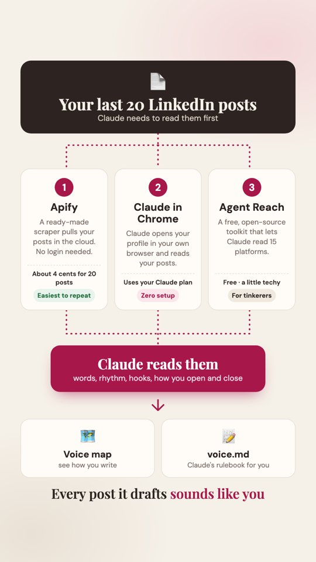
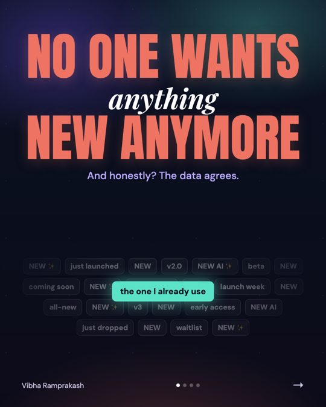
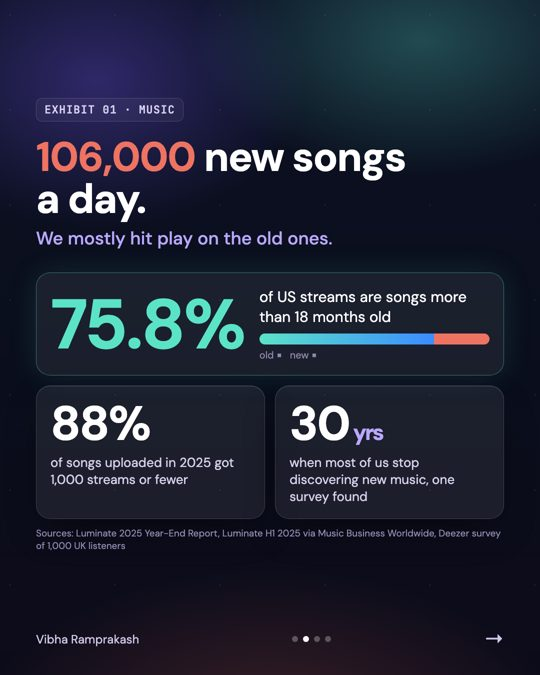
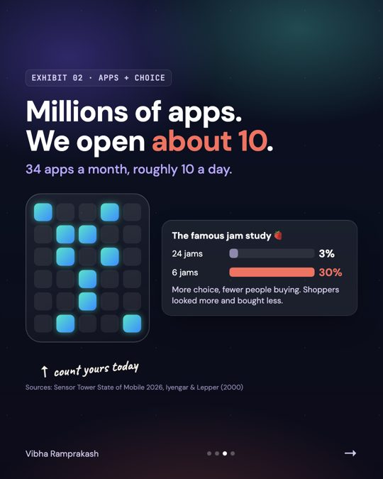
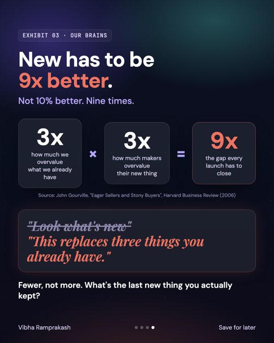

How it works
Claude reads your old posts, learns how you actually write, and saves it as one file called voice.md. A free pack of 12 LinkedIn skills uses that file to plan your week, write the drafts and strip out anything that sounds like AI. Typefully is the bridge to LinkedIn. Nothing goes out until you say yes.

Your rulebook. How you open, your rhythm, your words, what's banned.
Post Writer, Humanizer, Post Audit, Content Planner, Hook Extractor and 7 more. Free, open source.
Claude puts drafts straight into your Typefully. You read, tweak, then publish or schedule.
One page with your week, your voice map and every draft. See mine.
What you need
| Thing | Why | Cost |
|---|---|---|
| Claude Pro or Max | Skills and custom connectors need a paid plan with code execution turned on | Paid |
| Typefully account | Connects Claude to your LinkedIn. Link your LinkedIn inside Typefully first | Free plan works |
| Your LinkedIn | At least 10 posts is ideal. No posts yet? Use the Interviewer skill in step 3 | Free |
| Apify (optional) | Fastest way to pull your posts | Free credits |
Pull your last 20 posts
Claude needs to read how you write. Pick one of three ways. They all end in the same place.
Apify
A ready-made scraper pulls your posts. No login needed.About 4 cents for 20 posts. Easiest to repeat.Claude in Chrome
Claude reads your activity page in your own browser.Uses your Claude plan. Zero setup.Agent Reach
A free open-source toolkit that lets Claude read 15 platforms.Free, a little techy. For tinkerers.Method 1 · Apify
- Make a free account at apify.com.
- In Claude: Settings → Connectors, add the Apify connector and sign in.
- Paste this, with your profile link:
Method 2 · Claude in Chrome
- Install the Claude in Chrome extension and sign in.
- Be logged into LinkedIn in that Chrome.
- Paste this:
Method 3 · Agent Reach
Runs in Claude Code. It needs a one-time LinkedIn login, and Claude will walk you through it.
Map your voice, save voice.md
Once Claude has your posts, run this in the same chat. You get a visual voice map plus a voice.md file that every skill reads from now on.
What mine found (19 real posts)
- My 2024 posts opened like press releases ("Kickstart Your 2025 B2B SaaS Marketing Strategy!"). My 2026 ones open with a scene ("It's 11:43pm. On a Friday.").
- 12 of 19 posts had a real number. 3.6 emojis per post. My most-used word is "real".
- It caught 14 dashes. Readers clock dashes as AI now, so they're banned.
Add your own rules to voice.md
Install the 12 LinkedIn skills
The pack is sergebulaev/linkedin-skills: free, MIT licensed, about 4,100 GitHub stars, updated this month. It has 12 skills now (it was 11 a few weeks ago) and 20 hook formulas.
Claude desktop or claude.ai
- Open Customize → Skills.
- Choose Add from a repository.
- Paste
sergebulaev/linkedin-skillsand sync. - Done. The skills switch on by themselves when you talk about LinkedIn.
Claude Code
| Skill | What I use it for |
|---|---|
| Interviewer | Builds a Story Bank of your real numbers and moments. Best place to start if you've never posted |
| Hook Extractor | Turns your best-performing posts into reusable hook templates |
| Content Planner | A 7-day plan: topics, formats, hooks, times |
| Post Writer | Drafts in your voice using 20 hook formulas |
| Humanizer | Strips AI tells. It shows how detectors disagree, but doesn't promise to beat them |
| Post Audit | Checks each draft before you publish |
| Comment Drafter · Reply Handler | Drafts comments and replies. You pick which to send |
| Engagement Monitor | Shows who keeps engaging and who looks like a prospect |
| Profile Optimizer · Repurposer · Employee Advocacy | Headline and About rewrites, reels to posts, team programs |
Connect Typefully
- Sign up at typefully.com and connect your LinkedIn there first.
- In Claude: Settings → Connectors → Add custom connector.
- Paste
https://mcp.typefully.com/mcp, click Add and sign in to Typefully. - Test it:
Plan and draft your week
Bring your own ideas. Mine came from a WhatsApp note to myself: "Who's actually going to pay for AI?", "Is AI cheaper than DIY?", "No one wants anything new anymore". Your opinions are the part AI can't make up.
Make a carousel
LinkedIn carousels are PDFs. Claude can design the slides as a web page, turn them into images, stitch them into a PDF and attach it to your Typefully draft.




Review, then publish
Open each draft in Typefully. Read it out loud. If it doesn't sound like you, fix it or ask Claude to redo it. Then:
Your dashboard
Open my dashboard ↗ It plays my week on its own: drafting, humanizing, scheduling. It has 5 tabs: Live draft, My voice, 12 skills, Humanizer and This week. The data is mine, as a demo.
To build yours, paste this into Claude after steps 1 to 5:
The rules I learned building this
- It drafts, I approve. Nothing auto-posts. Ever.
- Don't post on LinkedIn that AI writes your LinkedIn. Post your opinions. The setup is the how, not the content.
- Never let it invent a story or a stat. If a draft says "I counted 9 apps today", make sure you did.
- Ground hot takes in real research and list the sources in the first comment.
- Check the counts. The voice map can be confidently wrong. Read it against your real posts.
- Re-check the skill pack before you share it. It went from 11 to 12 skills in a few weeks.
- Bring the ideas yourself. A note to yourself on WhatsApp is enough. AI is great at drafting and terrible at having your opinions.
Weekly routine (20 minutes)
| When | What | Time |
|---|---|---|
| Sunday | Drop 5 ideas into Claude, run the "Draft the week" prompt | 5 min |
| Sunday | Read every draft in Typefully, fix anything that isn't you | 10 min |
| Sunday | Schedule the approved ones for 9:00 | 1 min |
| Daily | Reply to comments yourself (Reply Handler can draft them) | 5 min |
| Monthly | Re-run the voice map with your newest posts | 5 min |
If something breaks
| Problem | Fix |
|---|---|
| Skills don't show up | Turn on code execution in Settings → Capabilities, then sync the repo again |
| Apify: "monthly usage hard limit exceeded" | Free credits are used up. Use Claude in Chrome (Method 2) instead |
| Typefully connector missing | Custom connectors need Claude Pro or Max. Check the URL is exactly https://mcp.typefully.com/mcp |
| The post isn't on my LinkedIn | It's probably still a draft. Check Typefully. Claude won't publish without your yes |
| Carousel shows as images, not a swipe | Ask Claude to combine the slides into one PDF and attach the PDF instead |
| Drafts still sound like AI | Re-run the voice map with more posts, and add the banned words to voice.md |